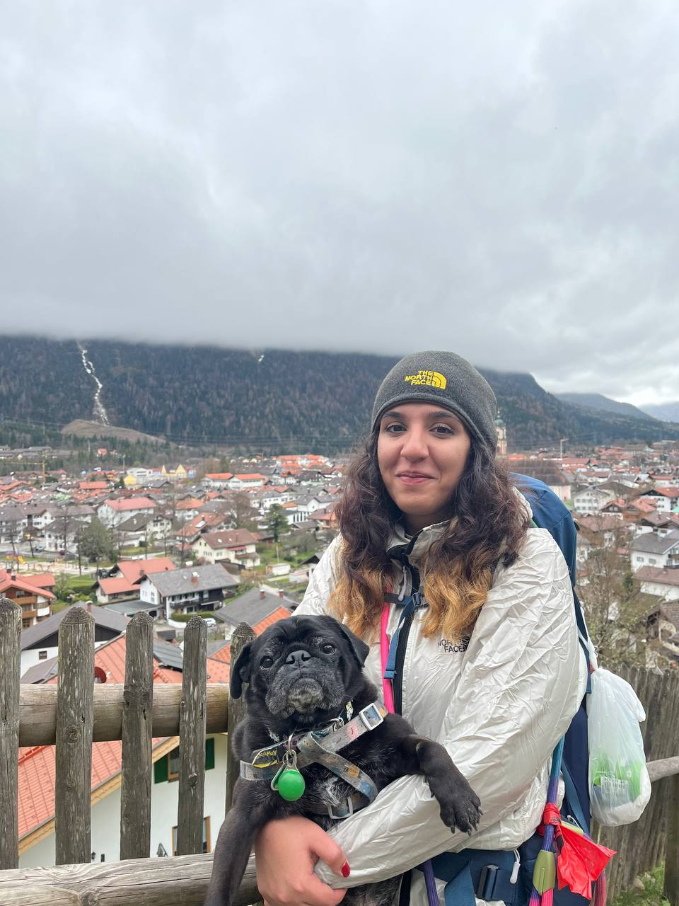

Mitra Maleki
MSc Astrophysics Student • LMU Munich
Stellar & Nuclear Astrophysics • Compact Objects
MSc Astrophysics Student • LMU Munich
Stellar & Nuclear Astrophysics • Compact Objects
I am an MSc Astrophysics student at Ludwig Maximilian University of Munich (LMU). I completed my Bachelor's degree in Physics at Sharif University of Technology, where I studied cosmology, with a focus on the early Universe and large-scale structure.
During my Master's at LMU, my interests have been moving toward stellar and nuclear astrophysics. I am particularly interested in neutron stars, compact objects, and nucleosynthesis, and I would like to explore this direction further through my Master's thesis and future research.
2025–2026 • Supervisor: Prof. Daniel Gruen
Analyzed large astrophysical datasets using semi-automated workflows. Contributed to observational follow-up of transient astrophysical events. Worked with Wendelstein Observatory data products.
2020–2024
Studied cosmology using Baumann and Carroll, inflation theory (Weinberg), and primordial black hole formation. Applied analytical and numerical methods in early-universe cosmology.
2025
Studied numerical solutions of Einstein equations for gravitational wave modeling.
Python (NumPy, pandas, matplotlib) Machine Learning (scikit-learn) Deep Learning AI & Automation (n8n) Git Linux/command line Wolfram Mathematica LaTeX JSON HTML/CSS JavaScript Data Engineering
2026–Present
Building data validation and automation workflows for structured datasets. Designing AI-assisted process automation using n8n. Developing systems for operational data handling and reporting.
2022–2025
Managed digital marketing campaigns and performance analytics. Applied data-driven optimization using KPIs and A/B testing.
2023
Theoretical and observational cosmology training program.
2023
Topics included CMB, dark matter, gravitational waves, and structure formation.
2025
Hydrodynamic simulations and astrophysical fluid modeling.
2023 • Sharif University of Technology
Led problem-solving sessions and supported course instruction.
Outside academia, I enjoy playing the viola, hiking with my dog, and backpacking. I believe that traveling is one of the best forms of education. I try to enjoy life to the fullest while having the opportunity to study at great universities, follow my curiosity, and dedicate my life to my love for science.
My dog has been with me for more than ten years now, so he has been there through almost every step of my education, from my university entrance exams in Iran to my Bachelor's degree and eventually moving with me to Germany for my Master's. He is probably my longest-standing academic partner.
He might not understand physics in quite the way we do, but he has been there through all of it: the studying, the deadlines, the papers, and everything in between.
One day, I hope he can sit with his dog friends at the park, sniff around for a while, and proudly tell them, "My mom is a scientist."
